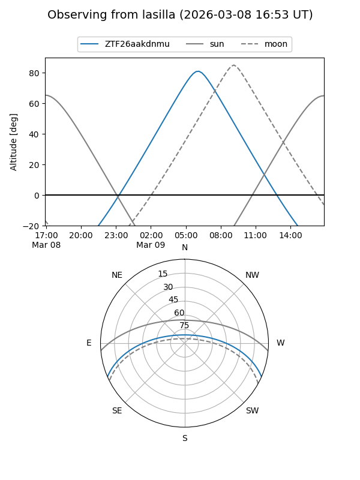
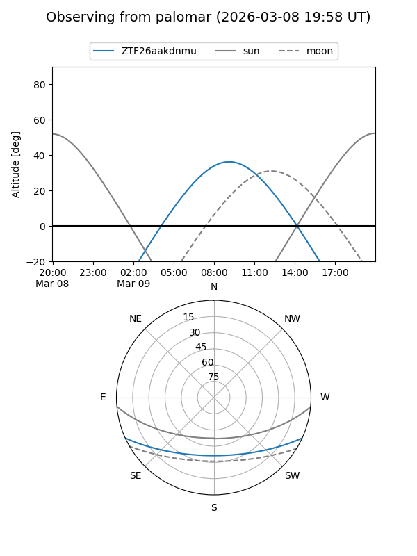

ZTF26aakdnmu
Target ZTF26aakdnmu at 2026-03-09 08:09
Aliases and brokers:
FINK: link
Lasair: link
ALeRCE: link
alt names
ZTF26aakdnmu (ztf,fink_ztf)
Coordinates:
equatorial (ra, dec) = 186.6191,-20.23238
equatorial (HMS+DMS) = 12:26:28.57,-20:13:56.55
galactic (l, b) = (295.0114,+42.25516)
Flags:
Photometry:
last ztfg=17.62
1 ztfg detections
Lightcurve
Visibility


Additional plots